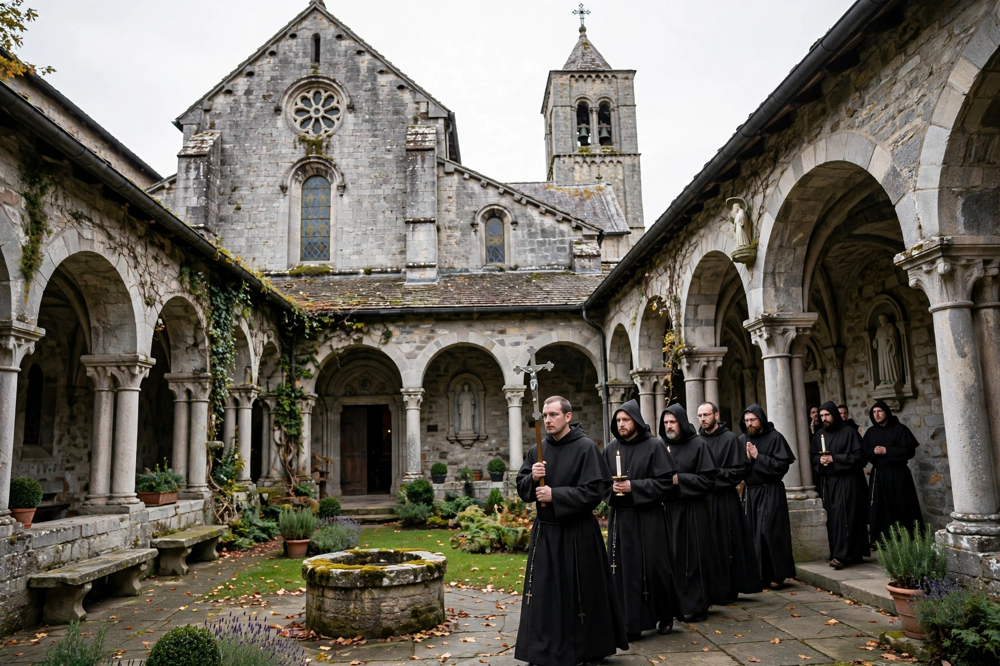

Order of Saint Benedict
| Order of Saint Benedict | |
| Abbreviation | OSB |
|---|---|
| Founder | Benedict of Nursia (c. 480–547) |
| Founded | 6th century; organised as an "order" from 1893 |
| Type | Catholic religious order (monastic confederation) |
| Motto | Ora et labora ("Pray and work"); Pax ("Peace") |
| Head | Abbot Primate, resident at Sant'Anselmo, Rome |

The Order of Saint Benedict (Latin: Ordo Sancti Benedicti, abbreviated OSB), sometimes called the Black Monks after the colour of their habits, is a Roman Catholic monastic religious order founded by Saint Benedict of Nursia, who wrote the Rule of Saint Benedict, a guide for monastic living, around 530 AD.
Organisation
For most of its history the "order" was not a single centralised body: each Benedictine monastery was independent, governed by its own abbot under the Rule. Since 1893 the monasteries have been grouped into congregations forming the Benedictine Confederation, headed by an Abbot Primate. Offshoots that follow the Rule as distinct orders include the Cistercians and the Trappists (Order of Cistercians of the Strict Observance).
Monastic life
Benedictine monks take vows of stability (remaining in one community), obedience, and conversion of life (often rendered as conversatio morum). The day is structured around the Liturgy of the Hours, lectio divina (meditative reading) and manual and intellectual work — summarised by the later motto ora et labora. Benedictine houses historically ran schools, copied manuscripts, preserved classical learning and practised hospitality to guests and pilgrims.
Influence
Benedictine monasteries such as Monte Cassino, Cluny, Canterbury and Fulda were centres of learning, agriculture and culture through the early and high Middle Ages, and Benedictine foundations remain numerous worldwide; there are also Benedictine communities in the Anglican, Lutheran and Orthodox traditions.